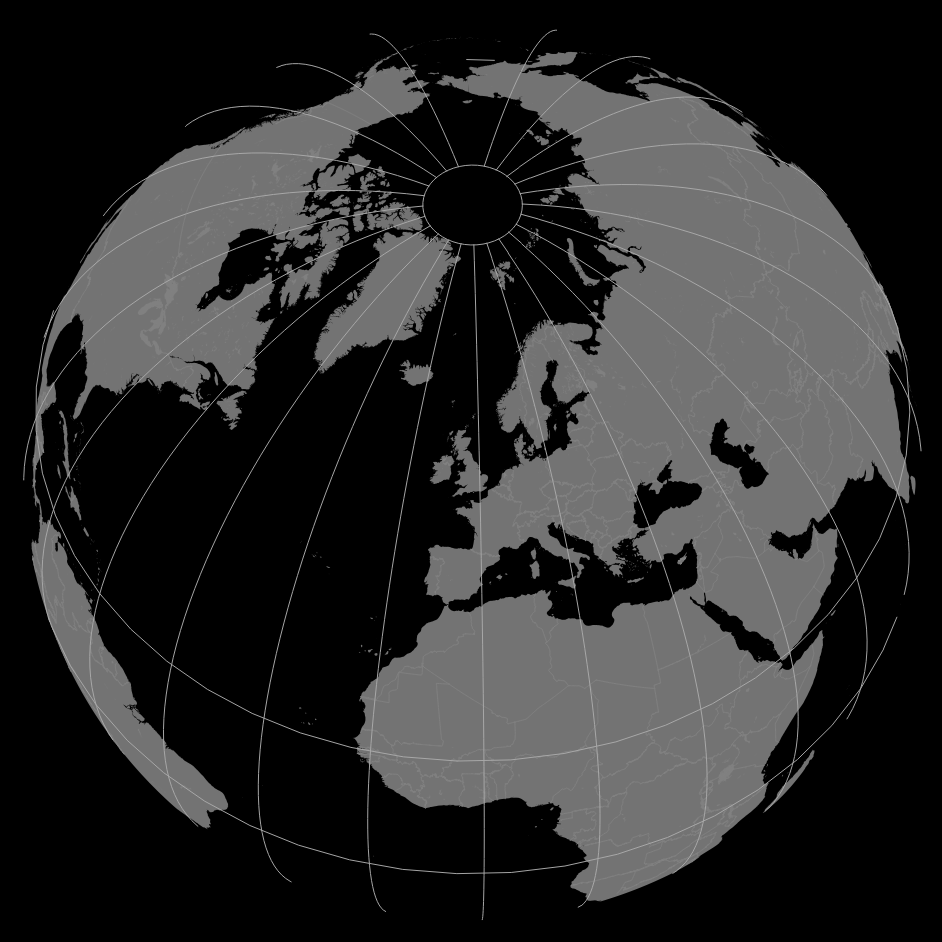

Create a globe in QGIS¶
date: 2016-07-14
I followed this tutorial by Steven Bernard to create a globe from a world map in QGIS.
The steps are straightforward. The fiddly bit was getting the line endings and indentation correct which are essential in Python, so I copied the text out and created a gist with line endings preserved:
This can then be called by opening the Python console as per the video, and typing:
import globe_projection_processing_qgis.py as circle
circle.doClip(iface, x, y)
Replacing x and y with your latitude and longitude (NOT
longitude and latitude, note the order) respectively.
The result is a beautiful globe when appropriately styled:

World map globe projection¶